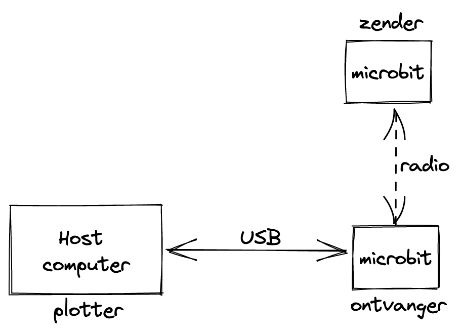
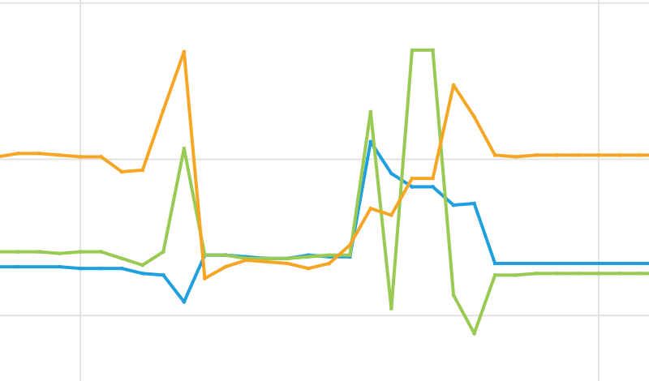

Valdetectie
Contents
8. Valdetectie#
Voorkennis
buttons en events
variabelen en toekenning
if-statement
print-opdracht
Concepten
signaal
versnellingssensor (accelerometer)
radio
plotter
Met de versnellingssensor (accelerometer) van de microbit detecteer je niet alleen gebaren zoals schudden. Je kunt ook een vrije val detecteren, of de botsing van een vallend voorwerp met de grond.
Om de vallende microbit vrij te laten bewegen, zonder kabels e.d., kun je deze microbit vanuit een batterij voeden. Deze microbit kan dan de meetgegevens via de ingebouwde radio versturen naar een andere microbit, die deze gegevens ontvangt en toont op de hostcomputer.
Je maakt deze valdetector in een aantal stappen:
eerst meet je de versnelling van een microbit aan de hostcomputer. Je kunt het signaal van de accelerometer “plotten” met de editor: je krijgt dan een grafische weergave.
de volgende stap is om deze gegevens vanuit een tweede batterijgevoede microbit via de radio te versturen.
8.1. Toon de accelerometer-signalen#
Programma
from microbit import *
import utime
while True:
(x, y, z) = accelerometer.get_values()
msg = "(" + str(x) + "," + str(y) + "," + str(z) + ")"
print(msg)
utime.sleep(0.1)
Gebruik het bovenstaande programma:
voer dit in via de editor, en laad het naar de microbit
als het programma loopt, klik je op de knop “REPL”
dit onderbreekt het programma op de microbit; je herstart dit door CTRL-D, of door de reset-knop op de microbit in te drukken
je kijgt nu gemeten waarden te zien als getallen
klik vervolgens op de knop “Plotter”
je krijgt nu de uitvoer ook grafisch te zien
je kunt eventueel het REPL venster sluiten door weer op de REPL knop te klikken.
Als het goed is, krijg je nu een weergaven van de x, y, z- waarden van de versnellingsmeter (elke 100 msec).
Uitleg van het programma
De functie-aanroep accelerometer.get_values() geeft de (x,y,z)-waarden van de versnellingssensor op dat moment. Deze waarden kennen we toe aan de 3 variabelen x, y, en z. Vervolgens maken we een string msg waarin deze waarden verwerkt worden, met de bijbehorende haakjes en komma’s. Deze string wordt vervolgens afgedrukt (naar de host gestuurd).
De functie-aanroep sleep(0.1) zorgt ervoor dat er 100 ms (1/10 s) zit tussen opeenvolgende metingen. Je kunt deze waarde aanpassen, als dat nodig is.
8.2. Sensordata via de radio#
{kind=link}

Fig. 8.1 Twee microbits voor versnellingsexperimenten#
from microbit import *
import utime
import radio
radio.on()
while True:
(x, y, z) = accelerometer.get_values()
msg = "(" + str(x) + "," + str(y) + "," + str(z) + ")"
print(msg)
radio.send(msg)
utime.sleep(0.1)
from microbit import *
import radio
radio.on()
while True:
msg = radio.receive()
if msg is not None:
print(msg)
De functie-aanroep radio.receive() geeft het meest recent ontvangen bericht; als er geen bericht ontvangen is is het resultaat None.
De onderstaande figuur geeft de accelerometer-data waarbij de microbit met batterij (voorzichtig) gegooid wordt. Hierbij is de microbit ter bescherming ingepakt in bolletjesplastic.
{kind=link}

Fig. 8.2 Accelerometer-data van een microbit-worp#
Kun je in bovenstaande figuur de periodes vinden:
waarin de microbit stil gehouden is;
waarin de microbit gegooid wordt;
waarin de microbit in vrije val is;
waarin de microbit op de grond valt;
waarin de microbit op de grond ligt?
Mogelijke uitbreidingen:
detecteren van de val - als “gesture”. (Dit past niet helemaal in de normale berichten, mogelijk moeten we daarvoor een apart bericht maken.)
zendende microbit: indicatie dat er een bericht gestuurd wordt.